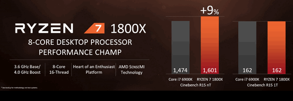

Au fost prezentate oficial pe 22 februarie și, după cum a anunțat AMD chiar de atunci, pot fi găsite la precomandă inclusiv în România, livrarea urmând să aibă loc începând cu 3 martie. Iată procesoarele Ryzen și plăcile de bază compatibile Ryzen.
Gama Ryzen 7 include trei procesoare, iar AMD spune că sunt comparabile ca performanțe cu modele Intel Core i7 ce costă dublu.
Ryzen 7 1700 – 8 nuclee (16 virtuale), 3 GHz, 65 W TDP / 1.600 lei
Ryzen 7 1700x – 8 nuclee (16 virtuale), 3,4 GHz, 95 W TDP / 1.929 lei
Ryzen 7 1800x – 8 nuclee (16 virtuale), 3,6 GHz, 95 W TDP / 2.484 lei
Procesoarele sunt construite în tehnologia 14 nm FinFET și se bazează pe arhitectura Zen, prezentată de AMD în vara trecută. Puteți citi aici totul despre noua arhitectură și cum îmbunătățește ciclul de instrucțiuni (închipuiți-vă și vocea lui Burileanu când citiți articolul, că poate vă era dor de cursurile de Arhitectura Microprocesoarelor), dar concluzia este că Ryzen obține o creștere de 52% în ceea ce privește instrucțiunile per ciclu, iar noua tehnologie de fabricație ține căldura disipată la o valoare rezonabilă.
Variantele X suportă și tehnologia Extended Frequency Range, adică un overclocking automat făcut dacă instalezi un cooler mai de doamne-ajută.
Prețul este atu-ul lor cel mai important. De exemplu, AMD spune că Ryzen 7 1800x întrece ca performanță un Intel Core i7-6900K într-un test ce include și codare video sau gaming 4K. Ryzen-ul costă 2.484 lei, acel Core i7 6900K costă 5.439 lei.

Față de Windows 8, această versiune este mai potrivită tuturor dispozitivelor, dar mai trebuie să treacă testul atragerii dezvoltatorilor dornici să creeze produse populare ca cele pentru iOS sau Android. Totodată, este o versiune care va rula atât pe telefon, cât și pe tablete și computere clasice. Există și modul Continuum care îți asigură o trecere rapidă de la mediul smartphone-ului la unul de PC prin conectarea dispozitivului la un monitor.
Pentru Windows 10, Microsoft anunță că utilizatorii din 190 de țări au acces la noul sistem de operare ca upgrade gratuit sau preinstalat pe noile PC-uri şi tablete. Ca noutăți, Microsoft readuce meniul Start şi în acesta funcțiile Live Tiles prin care oferă actualizări constante pentru informațiile care contează cel mai mult.
Totodată, Microsoft susține că Windows 10 este cel mai sigur sistem de operare Windows de până acum, atât prin intermediul optimizărilor aduse Windows Defender şi SmartScreen care asigură protecție împotriva virușilor, malware şi phishing, cât şi prin inovații precum Windows Hello, un mijloc de autentificare rapid, sigur şi care nu solicită o parolă.
Dupa mai multe luni de prezentari la diferite evenimente globale si locale, Sony a anuntat in sfarsit ca, casca PlayStation VR dedicata consolei PlayStation 4, va costa 400 de Euro si ca ea va fi disponibila comercial incepand cu luna octombrie a acestui an. Insa pretul nu include controllerul Move si nici PlayStation Camera, cele doua dispozitive de pozitionare in timpul utilizarii castii VR.
La lansarea pe piata a castii PlayStation VR, Sony va include aproximativ 50 de titluri de jocuri care vor fi disponibile odata cu acest gadget. Sony colaboreaza in prezent cu peste 230 de dezvoltatori la nivel global pentru a le oferi clientilor astfel de continut pentru realitatea virtuala.
In ceea ce priveste specificatiile tehnice ale PlayStation VR, aceasta casca dispune de un ecran OLED de 5.7″ cu rezolutie Full HD, vizualizarea continutului la un unghi de 360 de grade, audio 3D si un ping mai mic de 18milisecunde.
Tot in cadrul evenimentului cu presa de la GDC 2016, Andrew House, CEO-ul Sony Computer Entertainment, a anuntat ca EA, Lucasfilm si DICE lucreaza la dezvoltarea unei experiente Star Wars: Battlefront pentru sistemul de realitate virtuala dezvoltat de Sony.